Editorial
Una narrativa fotográfica para presentar el concepto de una colección: imágenes principales, detalles, primeros planos y recursos complementarios.
Fotografía + producción visual
Tenerife / disponible fuera
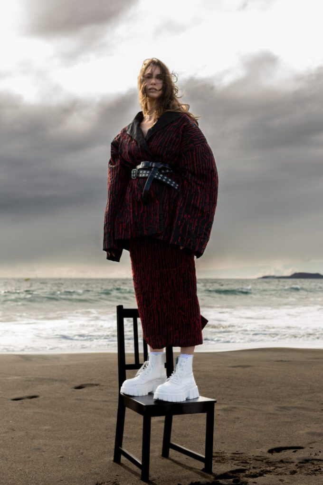
Una imagen no empieza cuando se dispara la cámara. Empieza con una intención, una dirección y una forma concreta de mirar.
Entrar al estudioNo se trata de producir más imágenes.
Sara García Studio reúne fotografía, dirección visual, maquillaje y producción para que cada proyecto tenga una identidad reconocible desde el primer encuadre.
Trabajamos con marcas, diseñadores, modelos y equipos que necesitan algo más que una ejecución técnica: una mirada capaz de ordenar la idea y convertirla en una pieza con intención.
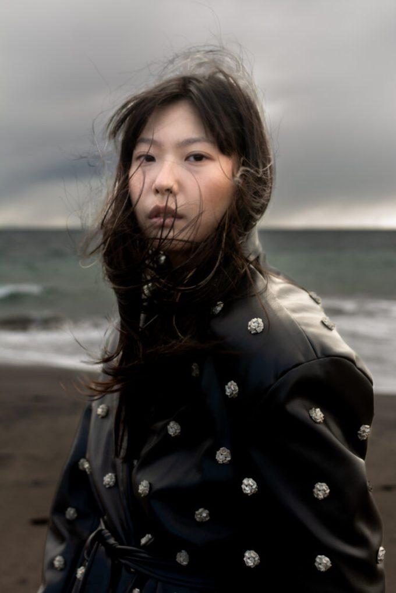
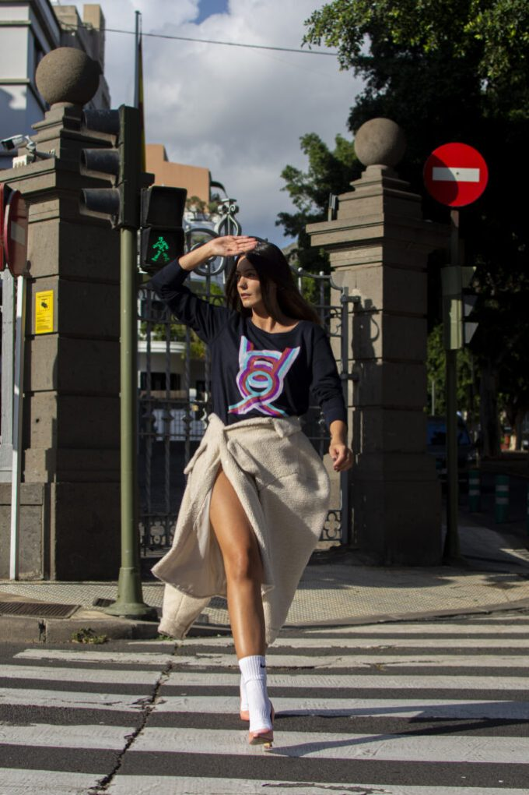
Definimos concepto, localización, estilismo, maquillaje, peluquería, atrezzo y lenguaje visual. Cada decisión existe para que la colección se entienda sin necesidad de explicarla.
Una narrativa fotográfica para presentar el concepto de una colección: imágenes principales, detalles, primeros planos y recursos complementarios.
Una serie clara y coherente para mostrar prendas, referencias y combinaciones. Puede funcionar como presentación, catálogo comercial o herramienta de venta.
Un book actualizado y fiel a tu imagen: estilismo neutro, cabello natural y una dirección sencilla pensada para castings y agencias.
Una pieza audiovisual breve donde imagen, música y movimiento construyen el universo de la firma. También desarrollamos spots con un objetivo comercial más directo.
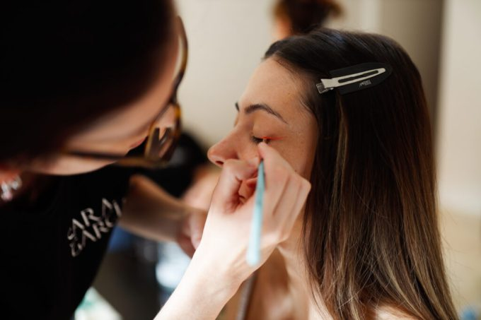
Lo que no suele salir en la foto
Un buen resultado depende de muchas decisiones pequeñas: referencias, equipo, tiempos, pruebas, ajustes y coordinación. Documentar ese proceso también puede formar parte de la historia de tu marca.
Making of · fotografía y vídeoFondo limpio, escenografía o integración con modelo. Elegimos la forma de fotografiar según lo que debe transmitir la pieza, no según una plantilla cerrada.
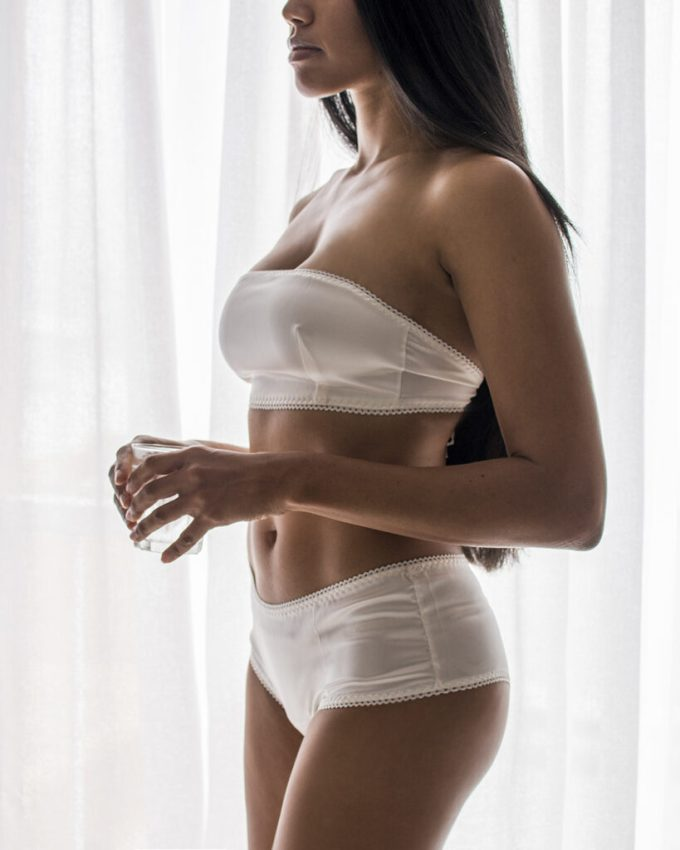
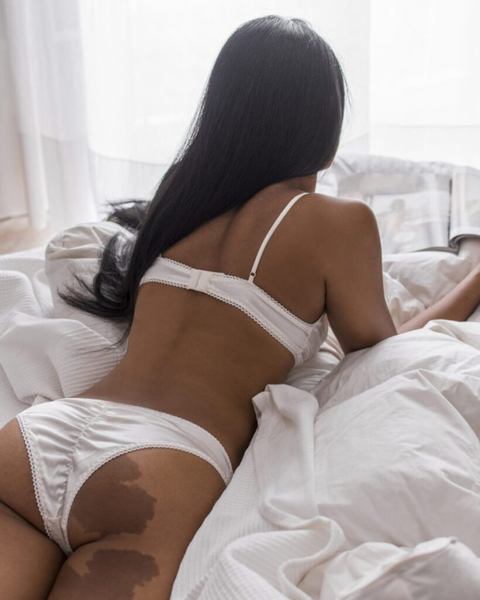
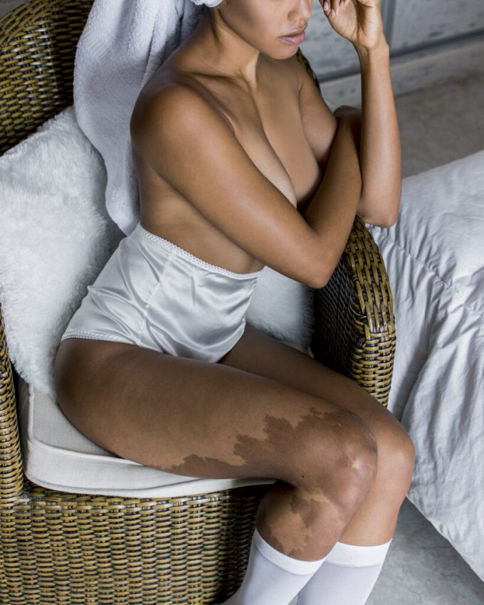
Cuando la imagen incluye modelo, coordinamos estilismo, maquillaje y peluquería para que el conjunto trabaje a favor del producto.
Presentaciones, showrooms, desfiles, backstage, pasarela, photocall y markets. Fotografía y vídeo con una cobertura mínima de dos horas.
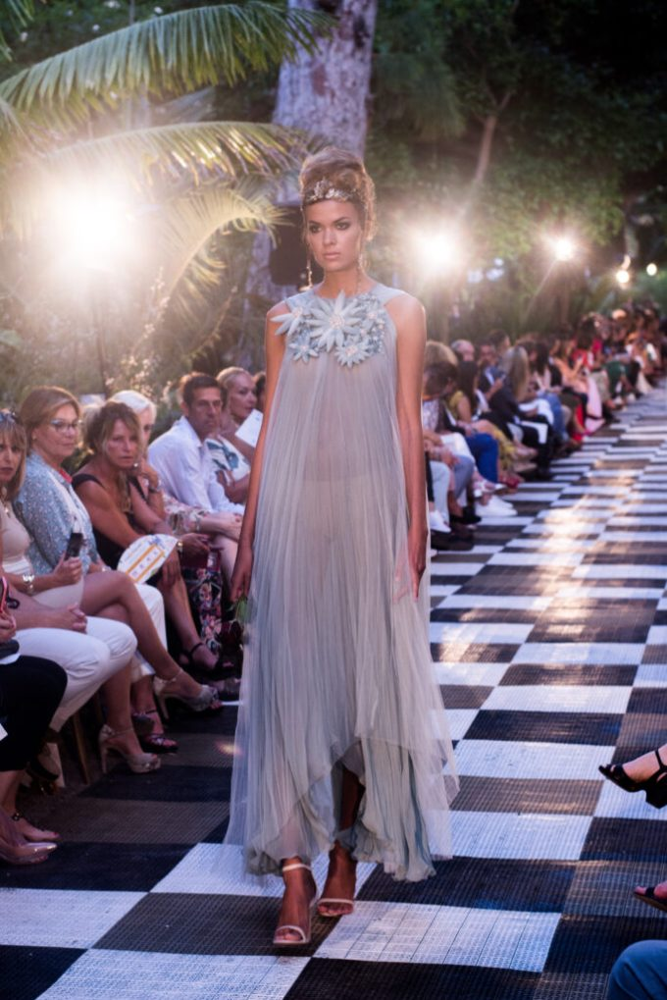
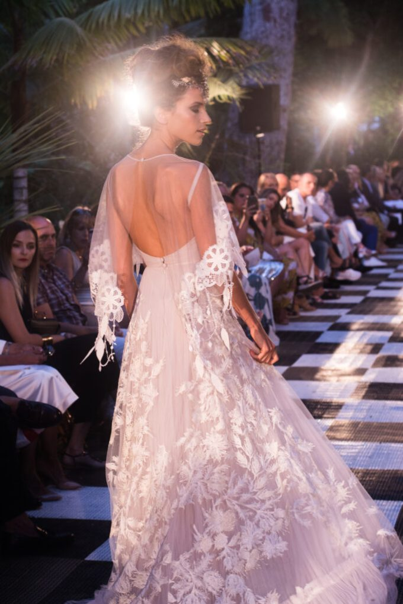
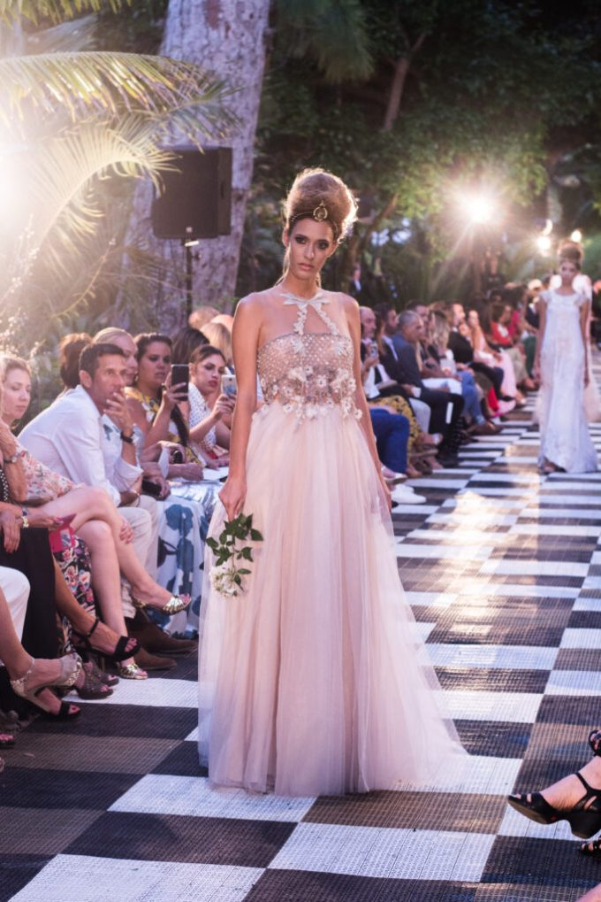
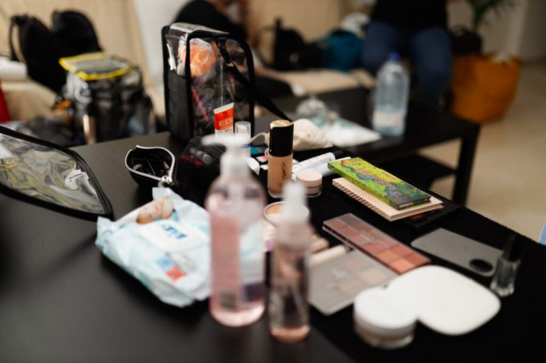
El estudio detrás de la imagen
Sara García Studio es un espacio multidisciplinar donde fotografía y maquillaje conviven dentro de una misma producción. Acompañamos proyectos personales y profesionales desde la idea inicial hasta la selección final.
También impartimos formación en fotografía y maquillaje para quienes quieren desarrollar técnica, criterio y autonomía.